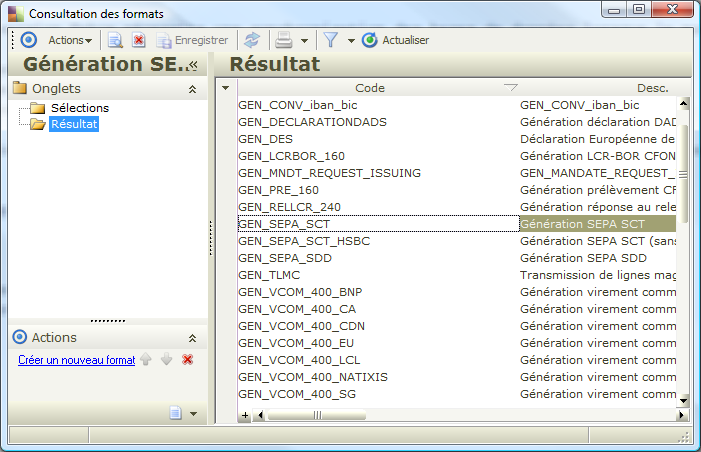

Guide des formats

|
Les formats de fichier permettent de décrire les correspondances entre une structure de données variable et un modèle métier.
Une fois cette correspondance établie il est possible d'importer ou d'exporter des fichiers correspondants à cette structure.
Sommaire |
Vue globale
Administration
Les formats sont stockés dans le référentiel.
Filtres de caractères
Pour les formats de génération, il est possible de filtrer les données écrites dans le fichier généré.
Pour cela, quatre choix sont possibles.
- Aucun
- CFONB
- EDI
- Personnalisé
- Pour chaque caractère de la chaîne à filtrer:
- si le caractère appartient à la liste des caractères autorisés il n’est pas filtré.
- sinon on enlève ses éventuels accents.
- si le caractère sans accent n’appartient toujours pas à la liste des caractères autorisés, il est remplacé par un blanc.
Exemple de filtre personnalisé, caractères autorisés "abcde" :
- "aa" donne "aa"
- "azza" donne "a a"
- "aéèêa" donne "aeeea"
Schémas
Pour les formats de type xml, un schéma (fichier xsd) est requis à l'exécution.
Lorsque le schéma est chargé, il apparaît dans les documents xml associés (lui ainsi que les schémas qu'il référence)
Mise en œuvre
Importer un fichier
L'importation d'un fichier en utilisant un format de définition peut s'effectuer
- Dans un processus métier par script métier
Utiliser la méthode d'importation de fichier en utilisant un format.
- A partir de l'assistant d'importation
Cochez "Format de fichier" puis sélectionner le format de définition souhaité.
{kind=link}
Exporter un fichier
Utiliser la méthode de génération de fichier en utilisant un format.
Gestion des formats
Si les formats sont stockés sous forme xml dans le référentiel pour des raisons de performance, la définition des formats s'effectue dans une base métier. (La conception d'un format peut ainsi s'effectuer en web).
Ainsi, il est nécessaire d'enregistrer le format dans le référentiel pour que les modifications apportées soient prises en compte lors de l'exécution.

Utiliser les interfaces utilisateurs situées dans le menu "Outils/Définition des formats"

Pour créer un format utilisez l'assistant de création de format :
Voir aussi :
Référence des formats de fichiers
| Whos here now: Members 0 Guests 1 Bots & Crawlers 1 |